P18
architecture
Đã duyệt · giữ nguyên bản gốc
P‑19B · P18 REVIEW‑17 INHERITED · QA CONTACT SHEET
14 loại đã có bản P‑18 được giữ nguyên; P‑19 gồm 25 loại, 4 capability và hai presentation variant “layers” + “scatter-chart”, mỗi identity có đủ 3 mode = 93 HTML. Không tạo lại các loại đã duyệt, không tự chuyển màu P‑18. P‑19 vẫn chờ owner review; P‑19C chưa được phép.
Dùng trực tiếp 14 anchor review‑17; không còn bản P‑19 trùng lặp.


Ba mode cho từng loại, capability và presentation variant còn lại.

